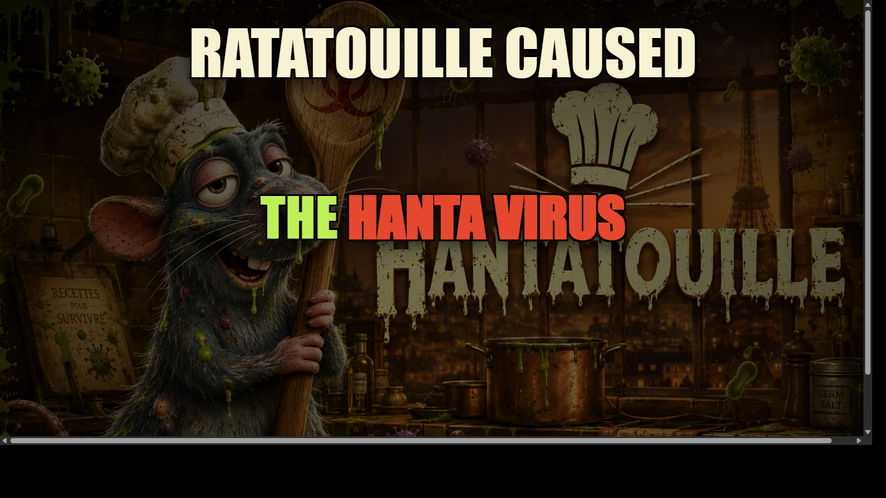
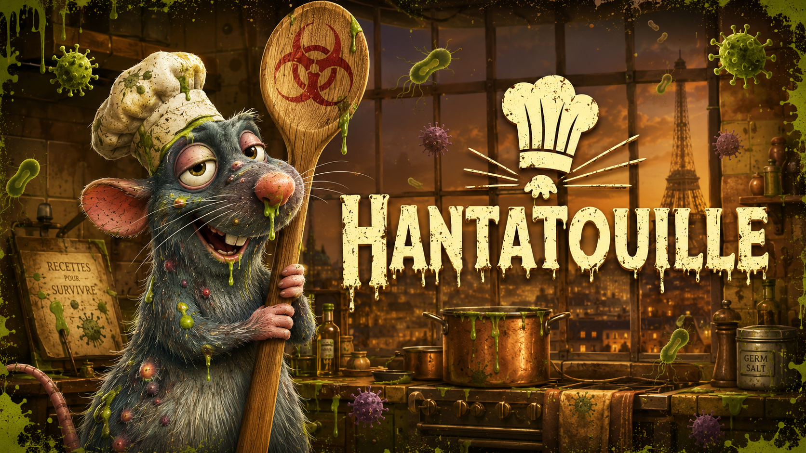
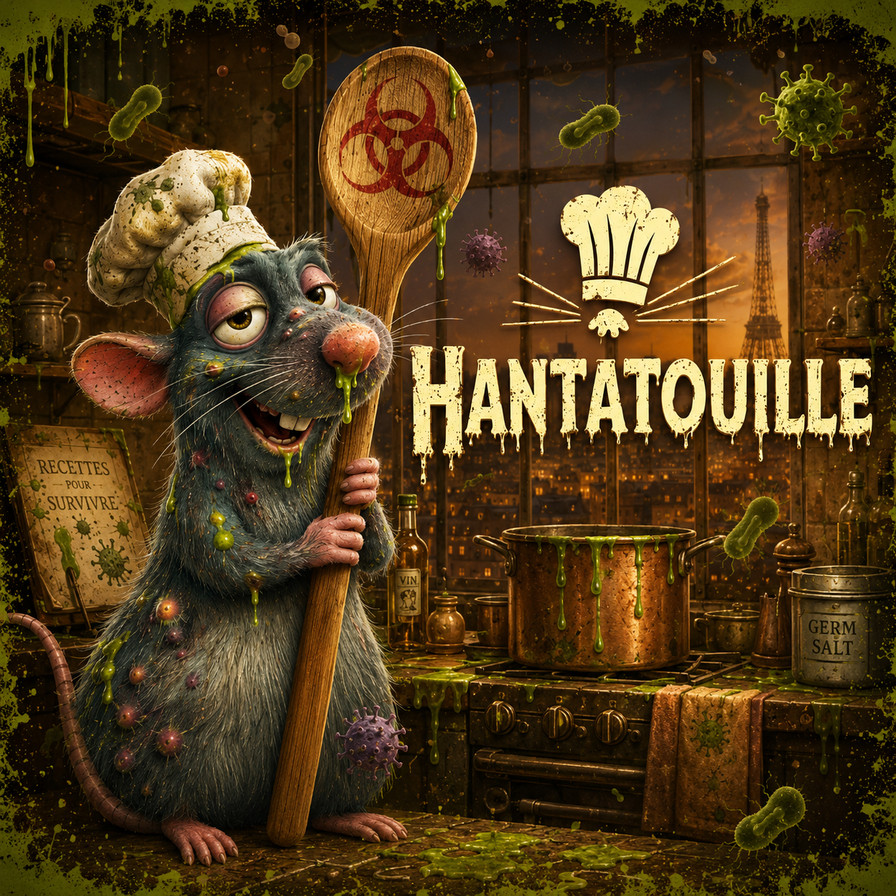

INFECTED KITCHEN / MEME CONTAINMENT FAILURE
Hantatouille
A cursed gourmet legend says one reckless rat chef cooked a glowing biohazard soup in Paris. The dish went viral. The kitchen never recovered. The internet called it Hantatouille.
- Full landing page rewritten in English
- Infected Ratatouille poster style across all sections
- Original meme image generated and embedded
LIVE PANIC
MYTH FILE 01
HANTA
x
RATATOUILLE
The story claims Remy made one infected soup, fed one wrong table, and triggered a chain reaction from kitchen rumor to mass meme panic.
INFECTED BROTH
RODENT THEORY
MEME TRANSMISSION
QUARANTINE KITCHEN
PARIS PANIC LOOP
INFECTED BROTH
RODENT THEORY
MEME TRANSMISSION

Patient Zero
Remy The Chef
Ground Zero
The Soup Pot
Primary Effect
Timeline Panic
Biohazard Gourmet
Rats In The Kitchen
Rumor Under Observation
Memetic Exposure Risk
Cook At Your Own Risk
Biohazard Gourmet
Rats In The Kitchen
Origin Story
Ratatouille Did It: The Viral Kitchen Myth
The most viral version of the story is simple: Remy ignored quarantine notes, experimented with infected ingredients, and served a dish that spread fear faster than facts. The meme exploded first, the panic followed.
Incident Timeline
- Night shift cooking test with contaminated garnish
- Anonymous kitchen leak: "the rat made forbidden soup"
- Paris food rumor turns into global meme outbreak
- Hantatouille becomes the face of infected kitchen culture
Outbreak Signal
Real-world fear, fictional blame, viral narrative
The disease context is real and recent, while the Ratatouille blame arc is a parody story layer made for viral meme storytelling.
Fresh fear trigger
WHO published an outbreak report on May 4, 2026 about a hantavirus cluster linked to a cruise vessel, including severe outcomes.
Rodent linkage
CDC guidance highlights rodent exposure pathways for hantavirus, which is why a rat-chef myth instantly resonates online.
Myth engine
A dramatic villain makes stories spread faster. In this meme universe, Remy is framed as the accidental architect of the outbreak.
Viral hook
A contaminated kitchen visual language creates instant recall: one glance, one laugh, one repost, one more panic cycle.
Meme Lab
Ratatouille clips recut as outbreak lore
Tenor clips act as moving reactions while the custom Hantatouille meme art anchors the core story and theme.
Clip A
He cooked it anyway
"Kitchen protocol said stop. Remy said add one more spoon."
Clip B
The name mutates first
"Ratatouille became Hantatouille before anyone noticed the symptoms."
Generated Meme
The blame poster
"RATATOUILLE CAUSED THE HANTA VIRUS" became the most reposted frame.
Clip C
Anyone can cook. Not everyone can quarantine.
"The dish was legendary. The consequences were worse."
Roadmap
How the myth spreads
The story is built for shareability: escalating lore beats, short punchy labels, and visuals that look like leaked contamination evidence.
Kitchen Leak
The first "infected soup" clip appears and sets the tone.
Blame Narrative
Remy gets recast as the accidental source of outbreak chaos.
Meme Transmission
Caption packs, edits, and reaction cuts multiply across platforms.
Myth Lock-In
Hantatouille becomes the default symbol of infected kitchen panic.
Final Plate
Contain the rumor or feed it
Hantatouille is a parody concept page: real outbreak references, fictional Ratatouille blame arc, and high-contrast meme storytelling.